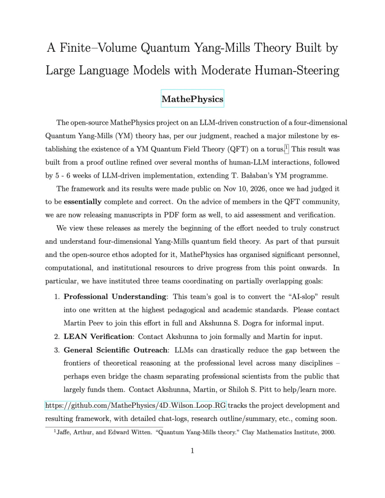

https://x.com/MathePhysical/status/2124964988486054048
▶ MIT, 옥스퍼드 소속 박사후 연구원 2명이 Claude와 ChatGPT를 활용해 4차원 유한 공간에서의 양–밀스 이론 존재 증명을 완성했다고 발표함.
▶ 오픈AI가 증명 자료를 공개하기 전인 11월 10일, 독자적인 접근법으로 증명에 도달함.
▶ 연구진에 따르면 새로운 수학적 증명에 해당하는 문서들은 Claude와 ChatGPT가 작성했으며, 인간 연구진은 연구 방향을 주도함.
▶ 사용된 AI 비용은 1,000달러 미만이며, 현재 앤트로픽으로부터 5만 달러의 지원금을 받아 수학적 검증을 진행 중임.
한 줄 요약: 거대 AI 기업이 아닌 연구원 단 2명이 상용 AI와 1,000달러 미만의 비용으로 밀레니엄 난제의 핵심 부분에 대한 독자적인 증명을 도출함.
출처: 연구팀 GitHub

저게 뭔데 던밀스보다 쌤?